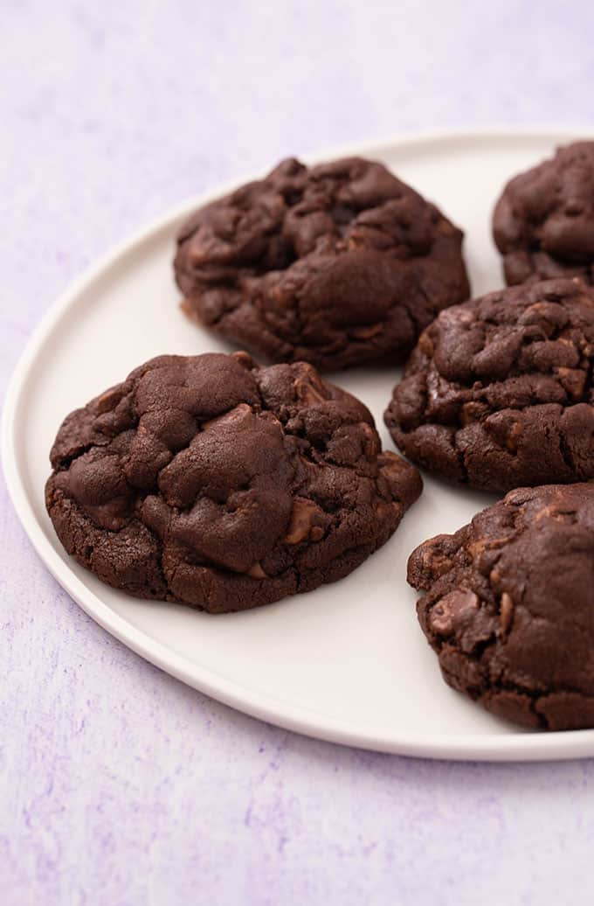

Allrecipes Chocolate Cookie recipe

Description:
These soft cookies taste like mouth warming chocolate brownies.
They're crisp on the outside and soft on the inside. If you're a fudge lover you'll absolutely adore these.
Ingredients
- 2 cups white sugar
- 1 1/4 cups margarine
- 2 large eggs
- 2 tsp vanilla extract
- 2 cups all-purpose flower
- 3/4 cup unsweetened cocoa powder
- 1 tsp baking soda
- 1/8 tsp salt
- 1 cup chopped walnuts
Steps
- Preheat the oven to 350 degrees F/175 degrees C
- Cream sugar and margarine in a large bowl until light and fluffy. Beat in eggs, one at a time, then stir in vanilla.
- Combine flour, cocoa, baking soda, and salt in a separate bowl. Add to the creamed mixture and mix until just blended. Stir in walnuts. Drop spoonfuls of dough 2 inches apart onto ungreased cookie sheets.
- Bake in the preheated oven until edges are set and centers are soft, 8 to 10 minutes. Let sit briefly before transferring to wire racks to cool completely.
Return to main page
Recipe Source